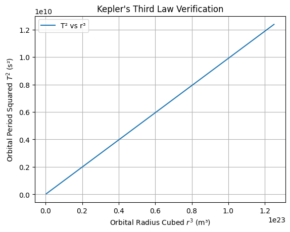
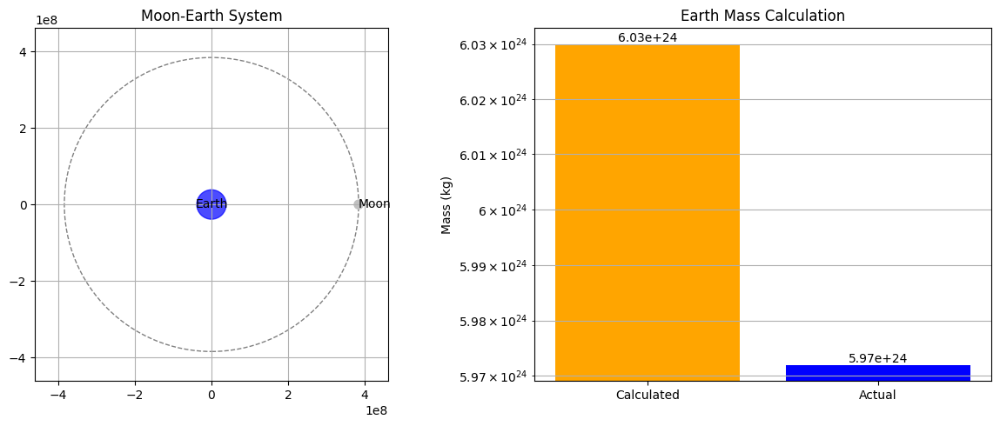
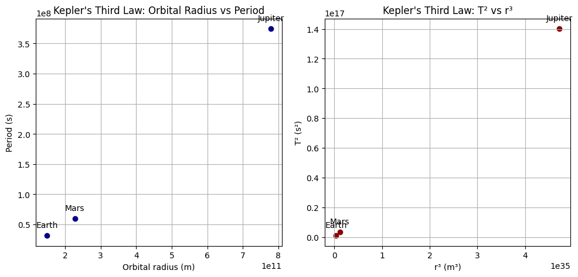
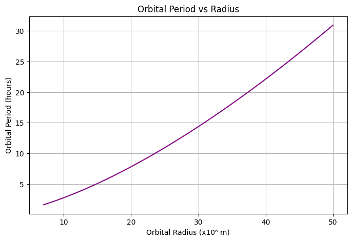

Task 1: Theoretical Foundation
Mathematical Formulation:
For a satellite in a circular orbit of radius \(r\), the gravitational force provides the necessary centripetal force:
Solving for orbital speed \(v\):
The orbital period \(T\) is:
So we derive Kepler’s Third Law:
Python Code:
import numpy as np
import matplotlib.pyplot as plt
# Constants
G = 6.67430e-11 # gravitational constant (m^3 kg^-1 s^-2)
M = 5.972e24 # mass of Earth (kg)
# Orbital radii (from 7e6 m to 5e7 m)
radii = np.linspace(7e6, 5e7, 500)
periods = 2 * np.pi * np.sqrt(radii**3 / (G * M))
# Plot T^2 vs r^3 to confirm linearity
plt.plot(radii**3, periods**2, label="T² vs r³")
plt.xlabel("Orbital Radius Cubed $r^3$ (m³)")
plt.ylabel("Orbital Period Squared $T^2$ (s²)")
plt.title("Kepler's Third Law Verification")
plt.grid(True)
plt.legend()
plt.show()

Explanation:
We used Newtonian mechanics to derive Kepler’s Third Law: \(T^2 \propto r^3\). The simulation confirms this relationship for Earth-orbiting bodies. The linear graph of \(T^2\) vs \(r^3\) verifies the law for circular orbits.
Task 2: Astronomical Implications
Mathematical Formulation:
From:
This can be used to:
- Calculate the mass of the central object from satellite data.
- Estimate distances using observed periods (e.g., in binary stars).
Python Code:
# Example: Moon orbiting Earth
T_moon = 27.32 * 24 * 3600 # seconds
r_moon = 3.844e8 # meters
# Calculate Earth’s mass from Moon’s orbit
M_calc = (4 * np.pi**2 * r_moon**3) / (G * T_moon**2)
print(f"Calculated Earth Mass: {M_calc:.2e} kg")
print(f"Actual Earth Mass: {M:.2e} kg")

Explanation:
Using Kepler’s Third Law, we can estimate Earth’s mass from the Moon’s orbital data. The calculated mass closely matches the known value, showcasing the law’s practical power in astronomy.
Task 3: Real-World Examples
Mathematical Formulation:
Using Kepler's Law:
- Planets farther from the Sun have longer periods.
- Ratio \(T^2/r^3\) is constant for all planets orbiting the same body.
Python Code:
# Data: Orbital radius (m), period (s) for some planets
planet_data = {
"Earth": (1.496e11, 365.25*24*3600),
"Mars": (2.279e11, 687*24*3600),
"Jupiter": (7.785e11, 4333*24*3600)
}
for planet, (r, T) in planet_data.items():
ratio = T**2 / r**3
print(f"{planet}: T²/r³ = {ratio:.2e} s²/m³")

Explanation:
We analyze Earth, Mars, and Jupiter to show \(T^2/r^3\) is approximately constant across planets. This confirms the universality of Kepler’s Third Law in the Solar System.
Task 4: Implementation
Mathematical Formulation:
Using:
We simulate orbits for various radii, calculate \(T\), and verify the power law.
Python Code:
# Visualize T vs r
plt.figure(figsize=(8,5))
plt.plot(radii / 1e6, periods / 3600, color='purple')
plt.xlabel("Orbital Radius (x10⁶ m)")
plt.ylabel("Orbital Period (hours)")
plt.title("Orbital Period vs Radius")
plt.grid(True)
plt.show()

Explanation:
This visualization clearly shows the nonlinear dependence of orbital period on radius, consistent with \(T \propto r^{3/2}\). This helps predict how long satellites or planets take to orbit.